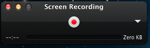
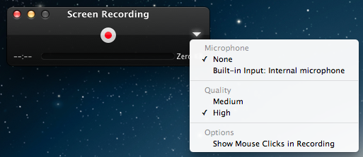
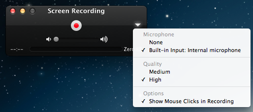

Make sure you have python 2.7.2:
$ python --version
Please note that we have not tried python version 3 for this.
Make sure the is no book directory in your home
Use virtual env:
$ cd ~
$ virtualenv MANUAL
$ source MANUAL/bin/activate
In case you were to use another terminal (for example quit this one and start a new one later), please remember to execute:
$ source MANUAL/bin/activate
We assume you will install your local copy of the manual in ~/github/manual. If you do not want to use the github dir, please use another directory name you like:
$ mkdir -p ~/github
$ cd ~/github
$ git clone https://github.com/futuregrid/manual.git
To build this book make sure you install the following module:
$ cd manual
$ pip install -r requirements.txt
This may take a while, so be patient.
The files will be in:
./doc/source
and have an rst ending. They use restructured text. For more info on rst see:
Execute the following script only with care. Maybe its best if you copy one line at a time as documented earlier to avoid problems:
cd ~
virtualenv MANUAL
source MANUAL/bin/activate
mkdir -p ~/github
cd ~/github
git clone https://github.com/futuregrid/manual.git
cd manual
pip install -r requirements.txt
You may be interested in using watchdog when you are in the process of editing a page. Upon chnage it will update the changed html output into the browser. For example, assume you edit the page openstack.rst. If you are running in another window:
make watchdog FILE=openstack
For more details, please see the Makefile.
Assume you like to transfer a page from the portal to rst. This can actually be done quite easily using a program called pandoc. First get the page and rename it to a page with html:
$ wget https://portal.futuregrid.org/contrib/simple-vine-tutorial
$ mv simple-vine-tutorial simple-vine-tutorial.html
$ pandoc simple-vine-tutorial.html -o simple-vine-tutorial.rst
Than edit the page and remove the code related to the menues so only the bare code stays:
typically everything before What links here can be ignored.
of the page can be ignored.
To create the pages locally simply go in the manual folder and saay make:
$ cd ~/github/manual
$ make
Your index file will be in:
$ firefox ./doc/build/html/index.html
On Osx you can simply say:
$ make view
References to jira can be made with the tag:
:jira:`this issue <FG-1418>`
It will result in an outpus such as
To just refer to a text with the number use:
:jira:`FG-1418`
and you will get
It uses the extension http://sphinx-doc.org/latest/ext/extlinks.html and the tags must be specified in the conf.py file.
to simplify access to a portal url you can use:
:portal:`my/ssh-keys`
and it will return
https://portal.futuregrid.org/my/ssh-keys
It uses the extension http://sphinx-doc.org/latest/ext/extlinks.html and the tags must be specified in the conf.py file.
Install OmniDazzle from:
Hide the icons on OSX desktop:
$ defaults write com.apple.finder CreateDesktop -bool false
$ killall Finder
Show the icons on OSX desktop:
$ defaults write com.apple.finder CreateDesktop -bool true
$ killall Finder
Start up quicktime you will see the following window:

Click on the little arrow on the right and you will see

Checkon the microphone you like to activate. This is most likely the Build-in-Input: Internal microphone. Also click on Show mouse click in Recording:

Then start regording. Be careful that you wait in the rcordng till you see a little timer on the left quicktime needs a bit of startup time when recording sound and images.